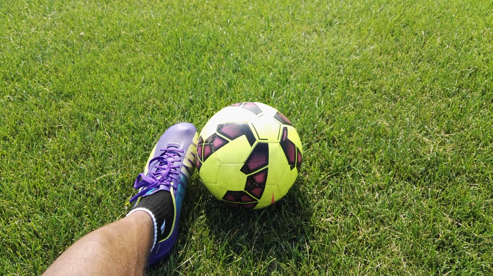
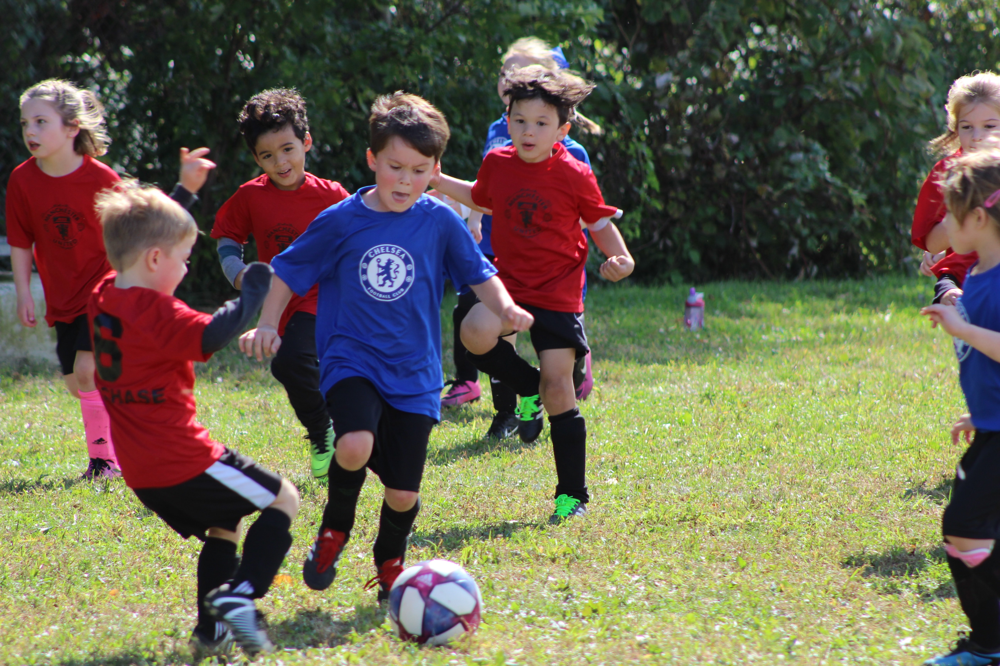
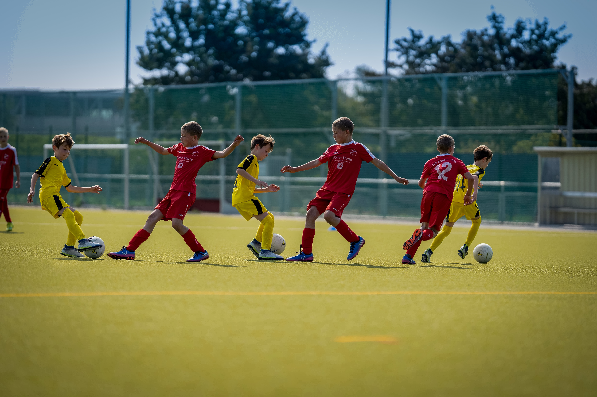

Welkom bij onze voetbalkampen voor kinderen
Bij SportFusion zijn we gepassioneerd over voetbal en geloven we dat het meer is dan alleen een
sport; het is een avontuur, een uitdaging en een manier van leven. We zijn verheugd om je te
verwelkomen in ons voetbalkamp, waar we de
wereld van voetbal verkennen, vaardigheden aanscherpen en nieuwe vriendschappen smeden.
Of je nu een beginnende speler bent die de basisprincipes wil leren of een ervaren voetballer op
zoek naar geavanceerde training, SportFusion heeft voor ieder wat wils. Ons ervaren team van
coaches staat klaar om je te begeleiden, je technische en tactische
vaardigheden te verbeteren en je te inspireren om je volledige potentieel te bereiken.
Dit kamp is meer dan alleen voetbaltraining. Het is een reis vol plezier, teamwork en
zelfontdekking. We kijken ernaar uit om samen met jou geweldige herinneringen te creëren en je
liefde voor het spel te laten groeien.
Dit is ons aanbod van voetbalkampen:
Voetbalkamp 1:
Fundamentele Vaardigheden en Plezier
Gericht op beginners en jonge voetballers.
Leeftijdsgroep: 6-10 jaar.
- gericht op beginners en jonge voetballers
- Activiteiten
- basistechnieken
- dribbelen
- passen
Voetbalkamp 2:
Technische Ontwikkeling en Teamspel
Gericht op spelers met wat ervaring in voetbal.
Leeftijdsgroep: 10-14 jaar.
- gericht op beginners en jonge voetballers
- Activiteiten
- basistechnieken
- dribbelen
- passen
- technische vaardigheden
- tactieken
- teamspel
Voetbalkamp 3:
Elite Training en Competitievoorbereiding
Gericht op gevorderde voetballers.
Leeftijdsgroep: 14-18 jaar.
- gericht op beginners en jonge voetballers
- Activiteiten
- basistechnieken
- dribbelen
- passen
- technische vaardigheden
- tactieken
- teamspel
- fysieke voorbereiding
- competitieve wedstrijden
Algemene informatie:
- Veiligheid en Gezondheid: De veiligheid en gezondheid van uw kind
hebben onze hoogste prioriteit. Onze staf is opgeleid in EHBO en we hebben
voorzorgsmaatregelen getroffen voor noodgevallen.
- Kampregels: Onze kampregels zijn bedoeld om een positieve en
respectvolle sfeer te bevorderen. We vragen uw kind om deze regels te volgen en moedigen
respectvol gedrag aan.
- Trainingsprogramma: We hebben een uitgebreid trainingsprogramma
ontwikkeld dat zowel technische vaardigheden als tactische kennis omvat. Uw kind zal
worden uitgedaagd en zich ontwikkelen.
- Hydratatie en Voeding: Het is belangrijk dat uw kind voldoende water
drinkt en gezonde snacks en maaltijden tot zich neemt. We zullen dit tijdens het kamp
benadrukken.
- Plezier en Positiviteit: We benadrukken het belang van plezier,
teamwork en respect voor anderen. Uw kind zal een positieve sfeer ervaren waarin ze zich
kunnen ontwikkelen en groeien.



|